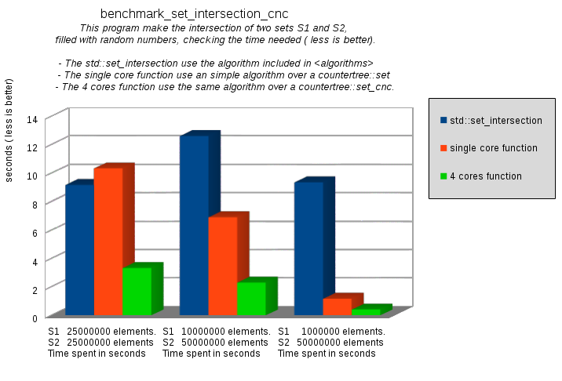
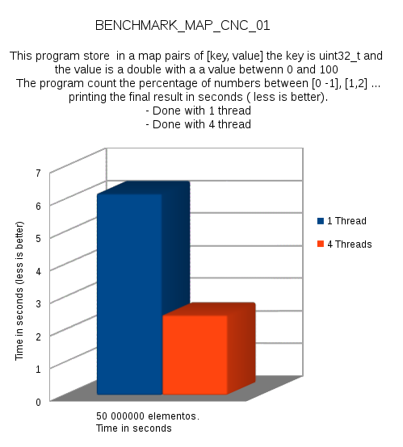
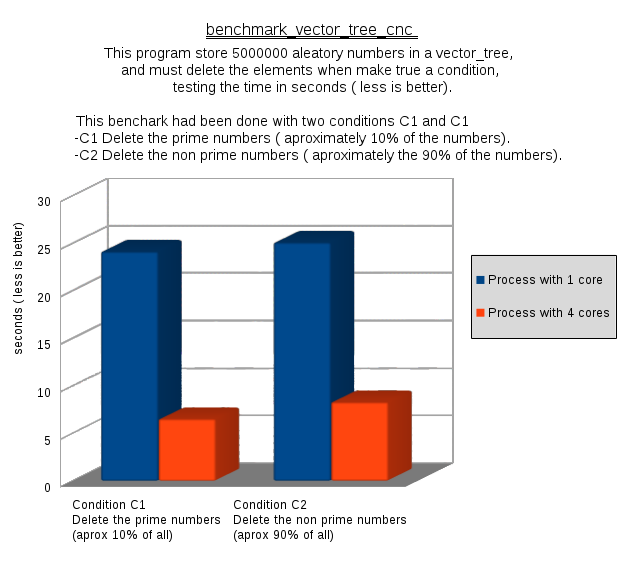

The [ Counter Tree + Suballocator ] Library
Francisco
Jose Tapia Copyright © 2010-2013 Francisco Jose Tapia
1.-
Introduction
This project is the joining of two separate ideas, the countertrees and
the suballocators. Each one have it own sense and utility. But they are
complementarity, and working joined express the goal of this project,
providing tools for to improve the user's work.
1.1.-
Description of the Counter Trees
The counter trees are red-black trees where each node have an
additional counter. This counter represent the number of nodes under
it, including itself. This counter permit us to access to the elements
by the position, in the same way than a vector. It is a random access
container and, of course, random access iterators.
This library is an implementation of a counter tree with pointers to
the first and last elements .

I didn't find any implementation of the binary Counter Trees, except
my version of 14 years ago. Due this, all
the algorithms for insert, delete, sort, find and balance was
created and developed specifically for this project, and they are
not based in any previous code or implementation.
The basic idea of this class is simple, you can use like a vector. It
permit access to the elements by their position. The allocators are
random access, like in a vector. The insertion or deletion of one
element don't imply any movement of data. It's only insertion or
deletion of a node in the tree.
The
operations of insertion, deletion and access to elements are
O(log(N)) operations.
In the multi core process,
the traditional trees ( STL set, multiset, map and multimap) have a
great problem. If you have 4000 element in a map, and want to be
processed by 4 cores. Each core need an iterator to it first element,
and a integer with the number of elements to process. The thread 0,
have begin( ) and 1000, but the thread 1 for to obtain an iterator to
the position 1000, need travel sequentially all the nodes from the
position 0 to the 1000.
The counter tree don't have the problem described before, the
iterators are random access and let it go directly. With the counter
trees, to distribute the elements of the tree over an arbitrary number
of cores is equal than to do with a vector. This is the key for to
design parallel algorithms for these data structures.
Based on the Counter Trees we have two kind of data structures :
- With unordered elements ( vector_tree)
- With ordered elements ( set, multiset, map and multimap)
COUNTER TREE WITH UNORDERED ELEMENTS
With unordered
elements, you have a vector_tree.
It is like a vector with identical interface, identical operations
than std::vector and std::deque . The difference is the performance.
- The vector_tree have the
same speed inserting or deleting in any position.
- The std::vector it is
very fast inserting and deleting in the first or in the last
position, but very slow inserting or deleting in central positions.
The vector_tree
is slower than the std::vector inserting or deleting in the first and
last position, but much more faster inserting or deleting in central
positions. This class don't pretend replace to the std::vector or
queue. It is only other alternative, useful in several problems, like
the priority queues implementation because don't have the limitations
of the implementations based on vectors or based on trees like set or
map.
In the library, you have an concurrent
implementation ( vector_tree_cnc) , which is thread safe for all the
operations of the class( insertion, deletion, lectures and
modification), and a non concurrent version ( vector_tree).
COUNTER TREE WITH ORDERED ELEMENTS
With ordered elements, you
have in the namespace countertree the classes set,
multiset, map and multimap. They have the same interface than
the STL std::set, std::multiset, std::map,std::multimap classes, plus
the capacity of access to the elements by the position like in a
vector.
The iterators are random access. You can subtract two iterators for to
know the number of elements between them.
You have the concurrent version
set_cnc , multiset_cnc, map_cnc and multimap_cnc, which
permit the concurrency of any operations, insertion , deletion ,
lectures and modification in safe way, and a non concurrent version
for to work with only 1 thread.
1.2.-
Benchmark of Parallel Algorithms
The best way to evaluate the Counter Trees is examining their
performance using parallel algorithms. These benchmarks are done with
the GCC compiler under Linux 64 bits ( the results are similar with
others compilers and operating systems)





 Boost
C++ Libraries
Boost
C++ Libraries